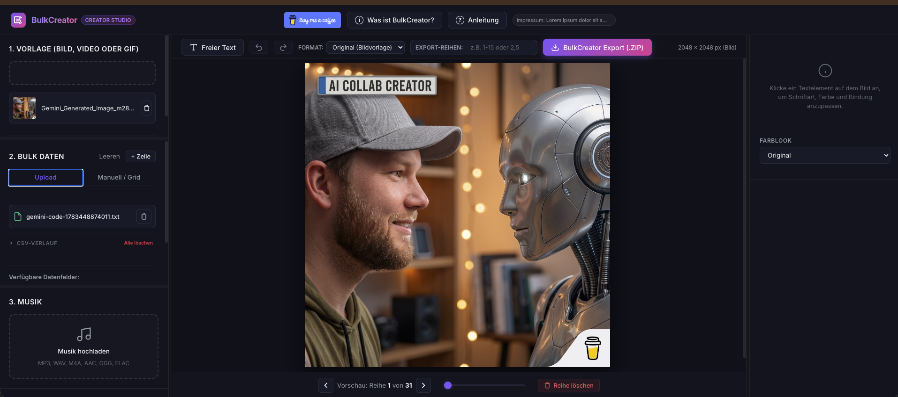
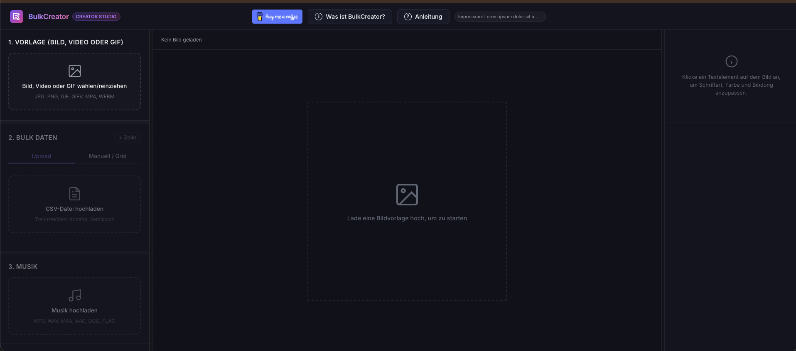

Serien-Content für Creator
Aus einer Idee wird eine ganze Content-Reihe.
Content Bulk Creator verbindet Vorlagen, CSV-Daten, Medienbearbeitung und Musik in einem dunklen, schnellen Editor. Perfekt für Reels, Shorts, Zitatgrafiken, Hooks, Thumbnails und Kampagnen, bei denen nicht eine Variante reicht.
Was Content Bulk Creator stark macht
Ein Editor, der auf Creator-Alltag gebaut ist.
Statt jede Grafik oder jedes Video einzeln neu zu bauen, arbeitest du mit Reihen: einmal gestalten, pro Zeile feinjustieren, gezielt exportieren.
Datenfelder frei platzieren
CSV-Spalten werden zu Textbausteinen, die du direkt auf der Vorlage positionierst und pro Reihe anpassen kannst.
Bild, Video und GIF bearbeiten
Zuschneiden, drehen, spiegeln, Farblooks, Helligkeit, Kontrast, Sättigung und Weichzeichnen sitzen direkt im Workflow.
Musik unterlegen
Tracks starten an der richtigen Stelle, laufen bei Bedarf in Schleife und lassen sich mit Fade In und Fade Out abrunden.
Export für ganze Reihen
Exportiere alle Inhalte oder nur bestimmte Bereiche wie 1-15, 2,5 oder 1-5,8,12-15 als fertige ZIP-Datei.
Individuell pro Variante
Zuschnitt, Farblook, Lautstärke, Musikstart und Texte können für jedes Element separat gesetzt werden.
Verlauf für Dateien
Vorlagen, CSV-Dateien und Musik bleiben griffbereit, lassen sich einzeln entfernen oder komplett leeren.
Workflow
Von der Vorlage bis zum fertigen ZIP.
Die Oberfläche führt von links nach rechts: Uploads und Daten links, Vorschau und Export in der Mitte, Eigenschaften rechts. Dadurch bleibt klar, was gerade bearbeitet wird.
- Vorlage laden: Bild, Video oder GIF in den Editor ziehen.
- Daten verbinden: CSV-Felder als Textelemente einsetzen.
- Medien veredeln: Zuschnitt, Farblook, Trim und Musik pro Reihe setzen.
- Gezielt exportieren: einzelne Reihen oder die ganze Serie als ZIP ausgeben.

Editor-Bereiche
Jeder Bereich zeigt genau das, was du gerade brauchst.
Die Ansichten sind nicht als Bildergalerie gedacht, sondern zeigen die echten Arbeitsschritte: Inhalte importieren, Vorschau bearbeiten, Musik abstimmen, Varianten prüfen und exportieren.
Anwendungen
Gemacht für Content Creator, die mehr aus einer Vorlage holen wollen.
Reels Serien
Shorts Cover
Zitatgrafiken
Hook Varianten
Podcast Snippets
Launch Kampagnen
Carousel Assets
Thumbnail Reihen
Support
Content Bulk Creator bleibt ein Creator-Projekt.
Wenn dir das Tool Zeit spart oder du die Weiterentwicklung unterstützen möchtest, kannst du einen Kaffee spendieren. Jeder Support fließt direkt in neue Funktionen, bessere Exporte und eine rundere Bedienung.